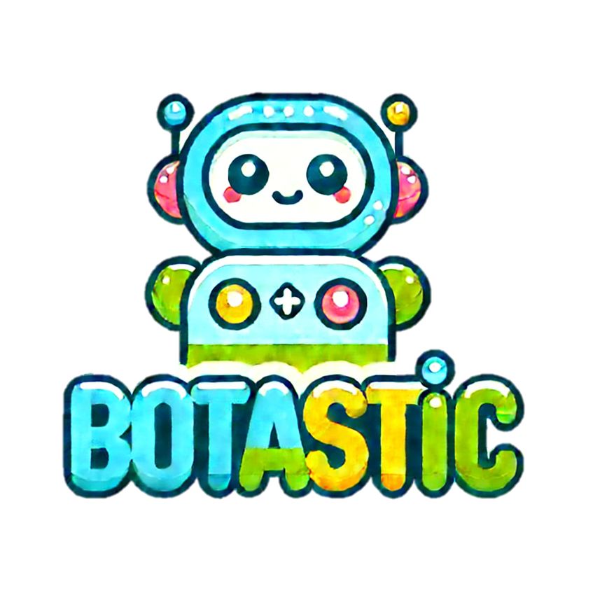

Botastic is an AI-powered mini robot designed to make learning fun and effective for children. It introduces STEM concepts, engages in interactive learning, and helps manage screen time, all while fostering parent-child learning support and soft skills development.
Botastic is more than just a toy—it’s a smart AI-driven companion built to inspire a lifelong love of learning. Our robot introduces children to Science, Technology, Engineering, and Mathematics (STEM) in a fun and interactive way. It also supports multiple languages and includes personalization for a better learning experience.
Our primary market is children aged 5–12 years, particularly from middle-class and upper-middle-class families. Botastic is also perfect for private schools, after-school programs, and tutoring centers seeking innovative teaching aids.